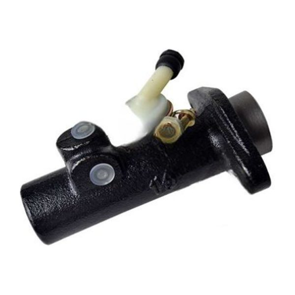

Available
Email for a quote
Mitsubishi 12196-401141-8 Brake Master Cylinder
| OEM part number | 12196-401141-8 |
| Fits | Mitsubishi |
| Models / notes | FD50K EF28B |
| Category | Brakes |
| Type | Aftermarket replacement |
Send us the quantity you need and we'll reply with pricing, usually within 24 hours. Not the exact part? We can source it. Send the part number or a photo.